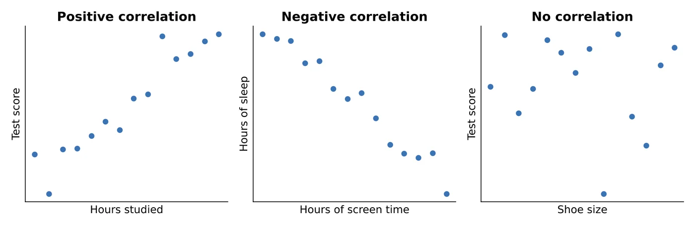

Relationships Between Two Variables
TEAS objective M.2.3 · Measurement and Data
What the TEAS expects: you can identify the independent and dependent variables, describe a relationship as positive, negative or none, read a scatter plot, and interpret the slope of a line.
Calculator: the TEAS gives you a basic on-screen calculator. Use it to find a slope from two points.
1. Independent and dependent variables
- The independent variable is the input: the thing that's chosen or changed on purpose. It goes on the x-axis (horizontal).
- The dependent variable is the output, the result that depends on the independent variable. It goes on the y-axis (vertical).
Test: say "___ depends on ___." Test score depends on hours studied, so hours studied is independent.
Check 1: A study tracks how a person's heart rate changes with the speed of the treadmill. Which is the dependent variable? Answer at the bottom of the page.
2. Scatter plots and correlation

Tap or click the figure to open it full size.
| Pattern | Meaning |
|---|---|
| Positive correlation | Points rise from left to right: as x increases, y tends to increase |
| Negative correlation | Points fall from left to right: as x increases, y tends to decrease |
| No correlation | No clear pattern |
The closer the points are to a straight line, the stronger the relationship.
Correlation is not causation. Two variables can move together because a third factor drives both (S.4.2 covers this).
3. Lines and slope
A straight line can be written y = mx + b:
- m (slope) = rate of change = rise ÷ run = how much y changes when x increases by 1.
- b (y-intercept) = the value of y when x = 0 (the starting value).
Example: a plumber charges y = 75x + 50, where x is hours. The $50 is the call-out fee (charged even at 0 hours); the $75 is the hourly rate. Each extra hour adds $75.
Slope from two points: (2, 9) and (6, 21) → m = (21 − 9) ÷ (6 − 2) = 12 ÷ 4 = 3.
Check 2: In y = −2x + 10, what happens to y when x increases by 3? Answer at the bottom of the page.
Common traps
- Swapping the axes. Independent on x, dependent on y.
- Reading a negative slope as "no relationship." Falling points show a negative relationship; how tightly they hug a line shows how strong it is.
- Treating the intercept as a rate. The intercept is a one-time starting value.
- Concluding causation from a scatter plot.
Learn it properly
- Scatter plots: OpenStax Introductory Statistics 2e, Section 12.2 Scatter Plots: OpenStax (opens in a new tab)
- Linear equations, slope and intercept: Section 12.1 Linear Equations: OpenStax (opens in a new tab)
- Slope: OpenStax Elementary Algebra 2e, Section 4.4 Understand Slope of a Line: OpenStax (opens in a new tab)
Check answers
- Heart rate. It depends on the treadmill speed, which the study sets.
- y decreases by 6. The slope is −2, so each 1-unit increase in x lowers y by 2; 3 × (−2) = −6.
ESCC TEAS Prep · Original study material written for Eastern Shore Community College. Linked textbooks: OpenStax, Introductory Statistics 2e and Elementary Algebra 2e.